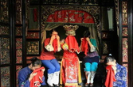
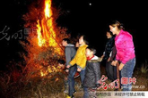
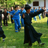
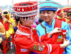

注册
|
登入
首页
景点
美食
习俗
名人
土家族
独特的风土人情！
传统习俗

娘哭-独特的风俗
土家女子婚前要唱哭嫁歌，即在婚前半月至一月开始哭唱，其形式有一人哭、二人对哭、多人一起哭。哭唱的内容大多是：哭爹妈的养育之恩，兄嫂、姊妹别离之情。
过社
过社是土家人最重要和最隆重的农事祭日，春社遗风在土家族等少数民族地区得以传承，而对秋社的重视程度远不如春社。

赶毛狗
农历正月十五夜，土家人张灯达旦“闹元宵”，取杉树枝，于宅外搭棚烧之，儿童大声呼逐，“赶毛狗，赶毛狗，一赶赶到张家大嫂灶门口，大嫂打个屁，毛狗子不成器”，谓“赶毛狗”或“赶毛九”，为土家独特风俗。

摆手舞
土家语叫“Sevbax（舍巴）”或“Sevbaxbax（舍巴巴）”.土家语称为Yevtixhhex（叶梯黑）。它集舞蹈艺术与体育健身于一体，有“东方迪斯科”之称。
撒尔嗬
汉族称“跳丧”，又叫“打丧鼓”。是土家族民间悼念死者的一种隆重的送葬仪式。撒尔嗬作为清江流域土家人的一种丧仪习俗，它的奇特之处就是丧事当作喜事办。

女儿会
又名恩施土家女儿会，是恩施土家族特有的风俗习惯，也是男女青年谈情说爱的一种场所，被誉为东方情人节或土家情人节。一般每年的农历7月7日至12日这些天，是传统的“女儿会”吉日，最初流行于恩施石灰窑、大山顶一带，如今已发展成全州性的民族节日。
恩施结婚习俗
土家族风俗
土家族文化
中国文化
恩施春节习俗
土家族民歌
恩施
传统节日
copyright©2015-2015 www.enshi.com 版权所有 盗版必究
意见反馈
网站收录
免费声明
关于我们
使用帮助